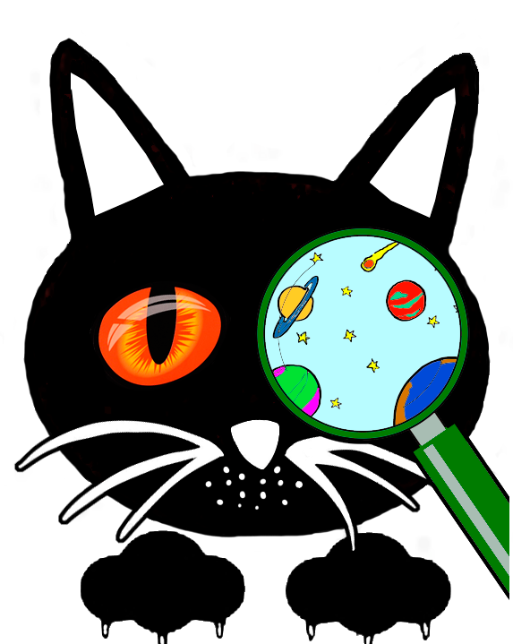

¿QUÉ ES LA CURIOSIDAD?
La curiosidad es cualquier comportamiento instintivo natural, evidente por la observación en muchas especies animales, y es el aspecto emocional en seres vivos que engendra la exploración, la investigación, y el aprendizaje. Esencialmente, describe un número desconocido de mecanismos del comportamiento psicológico que tienen el efecto de impulsar a los individuos, humanos y no humanos, a buscar la información y la interacción con su ambiente natural y con otros seres a su alrededor.
La curiosidad es cualquier comportamiento instintivo natural, evidente por la observación en muchas especies animales, y es el aspecto emocional en seres vivos que engendra la exploración, la investigación, y el aprendizaje. Esencialmente, describe un número desconocido de mecanismos del comportamiento psicológico que tienen el efecto de impulsar a los individuos, humanos y no humanos, a buscar la información y la interacción con su ambiente natural y con otros seres a su alrededor.
¿Acaso son curiosos los gatos porque necesitan explorar?
Los gatos tienen una enorme capacidad de aprendizaje. Cualquier cosa puede ser catalogada de interesante para ellos y motivarlos a ‘asumir’ riesgos que quizás sean innecesarios. Y gracias a la buena cantidad de accidentes en los que se pueden ver involucrados, se dice el refrán “la curiosidad mató al gato”, que es tan popular.